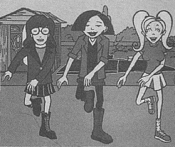

The February 13-19, 1999 issue of TV Guide had several mentions of the third season premiere of Daria:
In "The Roush Review" by Matt Roush ("Roush's Rave"): With prime-time animation hotter than ever, MTV's painfully funny teen satire Daria returns this week (February 17, 10 P.M./ET) with an inspired musical parody, "Daria!," in which the town bursts into song as a hurricane looms. Typical for the jaded Daria, while her chirpy family extols "Morning in the 'Burbs," her lyrics drip with irony: "Oh me, oh my, a lovely day is dawning. Oh, what a joy I didn't wake up dead. So I can go to school and then resume my yawning, and get my sleep at class instead of in my bed."
In the "TV Guidelines" for February 17: Lawndale's residents are singing in the rain in the third-season premiere of Daria -- it's a musical about the arrival of a hurricane.
In the "Close-Up" for February 17: Say It with Music -- The animated series' third season begins on a high note as it presents "Daria!" -- the musical. The cast performs seven original songs in the production, which revolves around the arrival of a deadly hurricane. As the clouds darken over Lawndale, the town's residents break into song. Even Daria and Jane can't help but join in, as they muse, rather flatly, about the town being blown away. But their thoughts grow darker when they try to exit their school-roof retreat -- and realize they're stuck there with Kevin and Brittany, who were making out. Meanwhile, Jake and Trent sing about being men as they search for the missing girls.

|